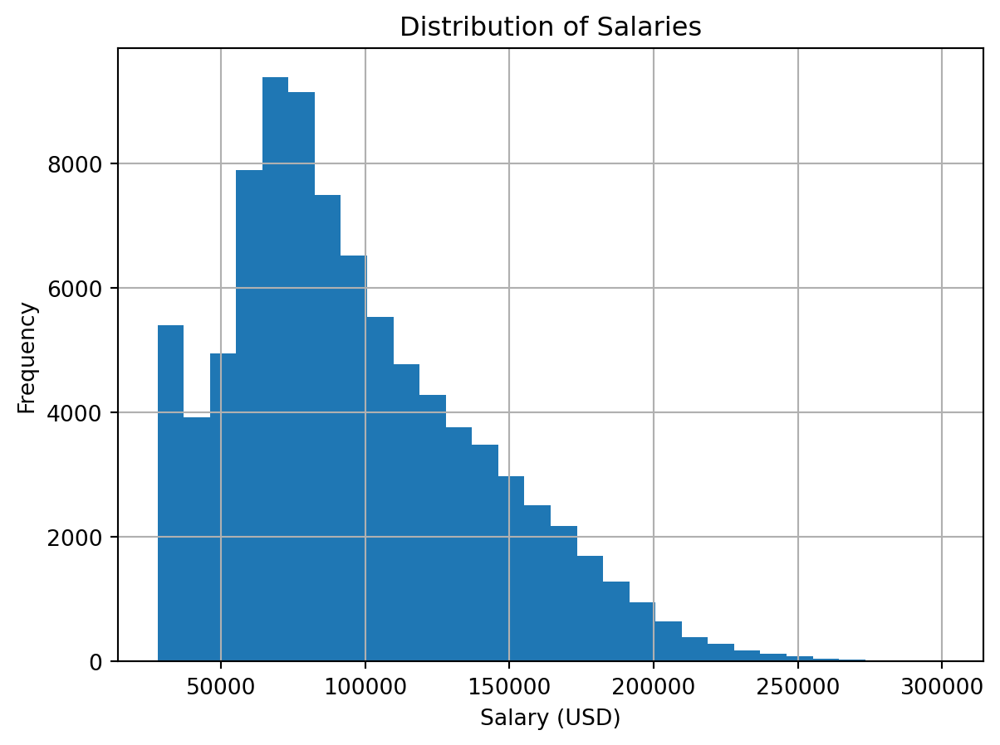
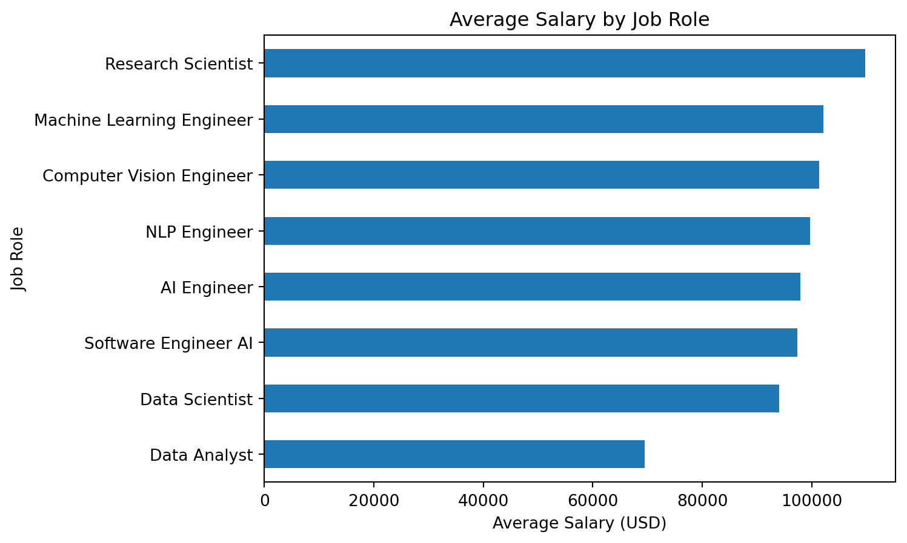
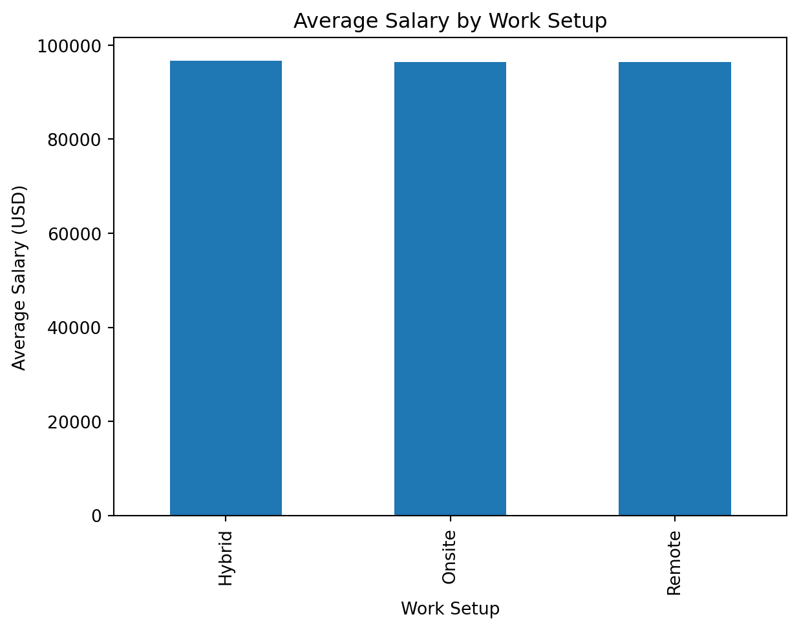
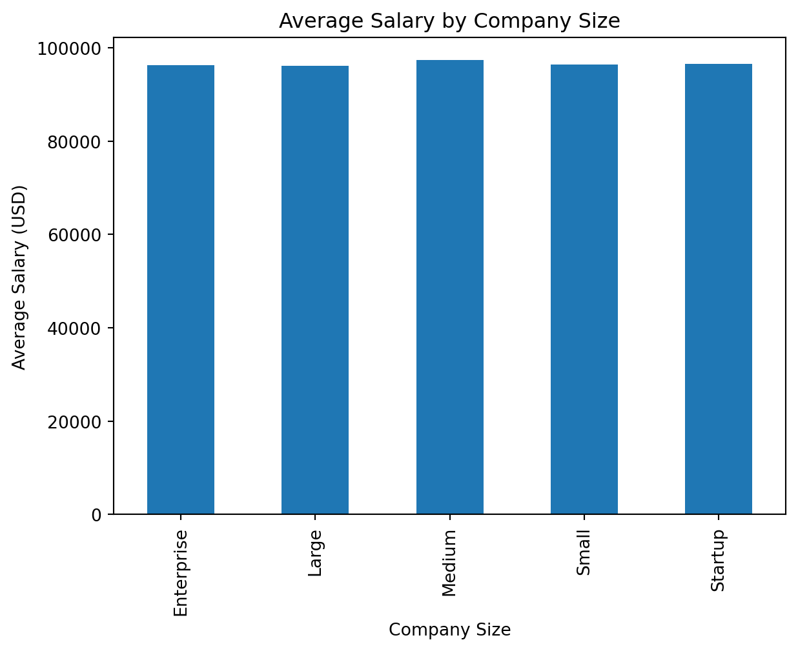

Table of contents - Introduction - Research Questions - Why This Matters - Data Overview - Data Cleaning - Exploratory Data Analysis - Statistical Testing - Modeling and Results - Key Insights - Recommendations - Limitations - Future Work - Questions?
Introduction
This project analyzes global AI and data job salaries from 2020–2026. The goal is to identify key factors that influence compensation and build predictive models. The data set was found using Kaggle and includes 90,000 observations across 35 variables, covering job roles, experience levels, locations, and work setups. The analysis will provide insights into salary trends and inform career strategies for professionals in the AI and data fields.
Research Questions
What factors most influence salary?
Do remote jobs pay more than onsite jobs?
How do salaries vary by role, country, and experience?
Why This Matters
Understanding salary trends in AI and data jobs can help professionals make informed career decisions and guide employers in competitive compensation strategies. With the rapid growth of AI, insights from this analysis can also inform education and training programs to better prepare the workforce for future demands.
Data Overview
This data set includes variables like job role, country, experience level, salary in USD, and work setup (remote vs onsite). The data was collected from various job postings and salary surveys across different countries and industries. The main variables I want to focus on are salary, experience level, job role, and work setup, as these are likely to have the most significant impact on compensation.
import pandas as pddf = pd.read_csv("global_ai_jobs.csv")df.head()
id
country
job_role
ai_specialization
experience_level
experience_years
salary_usd
bonus_usd
education_required
industry
...
vacation_days
skill_demand_score
automation_risk
job_security_score
career_growth_score
work_life_balance_score
promotion_speed
salary_percentile
cost_of_living_index
employee_satisfaction
0
1
UAE
Machine Learning Engineer
Reinforcement Learning
Entry
0
66465
5395
Master
Automotive
...
27
12
76
57
65
73
15
55
1.23
76
1
2
USA
AI Engineer
LLM
Entry
1
75507
11713
Bootcamp
Retail
...
27
54
29
69
60
51
15
58
0.87
67
2
3
Brazil
Research Scientist
Analytics
Entry
0
41660
5268
PhD
Healthcare
...
13
12
49
70
59
68
37
13
2.13
61
3
4
India
Software Engineer AI
Computer Vision
Senior
6
43268
7975
Diploma
Tech
...
30
80
47
79
65
55
46
74
1.49
56
4
5
Germany
Machine Learning Engineer
Computer Vision
Entry
0
69119
4758
Master
Retail
...
24
82
47
64
52
69
17
21
0.87
72
5 rows × 35 columns
Data Cleaning
Before conducting analysis, the dataset was cleaned to ensure consistency, accuracy, and usability for statistical modeling.
Handling Missing Values
First examined for missing values across all variables
Columns with minimal missing values were handled by removing incomplete rows, while ensuring that a substantial portion of the data remained intact
No columns with excessive missingness were retained, preserving the integrity of the dataset.
Several variables were checked and converted into appropriate data types: - Salary was confirmed as a numeric variable - Categorical variables such as job role, country, experience level, and work setup were properly formatted - Any inconsistencies in formatting were corrected
df['salary_usd'] = pd.to_numeric(df['salary_usd'], errors='coerce')# Drop rows with missing salary (critical variable)df = df.dropna(subset=['salary_usd'])
Removing Duplicates
Duplicate records were identified and removed to prevent bias in analysis and modeling
This ensured that each job entry represented a unique observation
Output shows 90,000 recorded observations after cleaning across 35 variables
df = df.drop_duplicates()df.shape
(90000, 35)
After cleaning: - The dataset remained comprehensive and suitable for analysis - Key variables were consistent and properly formatted - The data was ready for exploratory analysis and modeling - Bases our insights off of reliable and well-constructed data
Exploratory Data Analysis
This section explores patterns in salaries across roles, experience levels, company sizes, and work setups to better understand the structure of the dataset and the behavior of the “salary” variable.
Salary Distribution
import matplotlib.pyplot as pltdf['salary_usd'].hist(bins=30)plt.title("Distribution of Salaries")plt.xlabel("Salary (USD)")plt.ylabel("Frequency")plt.show()

The salary distribution is right-skewed, indicating that while most jobs fall within a moderate salary range, a smaller number of roles offer significantly higher compensation
These high-paying roles likely reflect senior or specialized positions.
Salary by Job Role
df.groupby('job_role')['salary_usd'].mean().sort_values().plot(kind='barh')plt.title("Average Salary by Job Role")plt.xlabel("Average Salary (USD)")plt.ylabel("Job Role")plt.show()

There are clear differences in compensation across roles
Machine learning and research scientists tend to command higher salaries compared to general analytics positions, reflecting higher demand and specialized skill requirements.
Remote vs Onsite Salaries
df.groupby('work_mode')['salary_usd'].mean().plot(kind='bar')plt.title("Average Salary by Work Setup")plt.xlabel("Work Setup")plt.ylabel("Average Salary (USD)")plt.show()

Remote, hybrid, and onsite roles show minimal differences in average compensation
This suggests that workplace flexibility may not be associated with salary, though further statistical testing is needed to confirm significance.
Salary by Company Size
df.groupby('company_size')['salary_usd'].mean().plot(kind='bar')plt.title("Average Salary by Company Size")plt.xlabel("Company Size")plt.ylabel("Average Salary (USD)")plt.show()

Larger companies tend to offer similar salaries on average
Indicates that organizational scale may not be a major factor in determining compensation
Hypothesis Testing
ANOVA Test for Salary Differences by Experience Level
H₀: All experience levels have the same mean salary H₁: At least one experience level has a different mean salary
from scipy.stats import f_onewaygroups = [group['salary_usd'].values for name, group in df.groupby('experience_level')]f_stat, p_value = f_oneway(*groups)f_stat, p_value
(np.float64(28488.504051869677), np.float64(0.0))
The ANOVA test examining salary differences across experience levels produced an F-statistic of 28,488.50 and a p-value effectively equal to zero (p < 0.001). This result provides extremely strong evidence against the null hypothesis.
Therefore, we conclude that mean salaries differ significantly across experience levels. This finding confirms that experience is a major determinant of compensation in AI and data-related roles.
Remote vs Onsite Salary Comparison (Two-Sample t-test)
H₀: There is no difference in mean salary between remote and onsite jobs
H₁: There is a significant difference in mean salary between remote and onsite jobs
The two-sample t-test comparing salaries between remote and onsite roles produced a t-statistic of -0.023 and a p-value of 0.982. Since the p-value is substantially greater than 0.05, we fail to reject the null hypothesis.
This indicates that there is no statistically significant difference in average salaries between remote and onsite positions. In other words, any observed difference in salaries is likely due to random variation rather than a true underlying effect.
Statistical Testing
Modeling and Results
To understand the drivers of salary and build predictive insight, two models were developed: a linear regression model and a random forest model.
Data Preparation for Modeling
Before modeling, categorical variables were encoded and the dataset was split into training and testing sets. - The target variable is salary in USD - Features include experience level, job role, country, company size, and work mode
The linear regression model achieved an R² of 0.846, indicating that approximately 84.6% of the variation in salaries is explained by the model. This suggests a strong relationship between the selected features and salary. The model’s RMSE of 17,202 indicates that predictions deviate from actual salaries by about $17,200 on average.
The random forest model further improved predictive performance, achieving an R² of 0.881. This means that 88.1% of the variation in salary is explained, reflecting a better overall fit. Additionally, the RMSE decreased to approximately $15,122, indicating more accurate predictions compared to the linear regression model.
The improvement in performance suggests that salary relationships are not purely linear. The random forest model is able to capture nonlinear interactions between variables ,such as how experience level and job role jointly influence compensation, leading to better accuracy.
Overall, both models perform well, but the random forest provides superior predictive capability. However, the linear regression model remains valuable for interpretation, as it clearly shows the direction and magnitude of relationships between individual factors and salary.
Key Insights
The analysis of global AI and data job salaries reveals several important patterns regarding compensation across roles, experience levels, and work environments.
Experience is the Strongest Driver of Salary
Across all analyses, experience level consistently emerged as the most significant factor influencing salary. Both the exploratory analysis and modeling results show that salaries increase substantially with experience, with senior and executive roles commanding significantly higher compensation. This highlights the importance of career progression in maximizing earnings within the AI and data fields.
Work Setup Has a Limited Impact
Differences between remote, hybrid, and onsite roles were observed, though their impact on salary is smaller compared to experience and job role. While remote work may offer flexibility, it does not appear to be the primary driver of compensation differences.
Company Characteristics Don’t Influence Pay
Larger companies generally did not offer higher salaries. This suggests that organizational scale does not play a major role in compensation structures within the industry.
The superior performance of the random forest model compared to linear regression indicates that salary is influenced by complex, nonlinear interactions between variables. Factors such as experience, role, and location do not operate independently but combine in ways that significantly affect compensation.
Overall Insight
Salary in AI and data-related roles is driven by a combination of experience, skills, and job specialization. While no single factor determines compensation, experience level and role specialization consistently emerge as the most influential drivers.
Develop specialized skills in AI and machine learning
Focus on high-demand technical areas to increase earning potential
Career strategy:
Prioritize role specialization and growth opportunities over other variables
Remote work offers flexibility but does not significantly impact salary
For employers:
Offer competitive salaries for experienced and specialized roles
Align compensation with market demand for high-skill talent
Recognize the value of retaining top technical employees
Limitations
The dataset may not fully represent all global AI and data jobs, leading to potential sampling bias
Salary data is reported in USD and may not account for differences in cost of living across countries
Linear regression assumes linear relationships, which may oversimplify complex salary dynamics
Random forest improves accuracy but reduces interpretability of individual variable effects
External factors such as company performance, industry trends, and negotiation are not captured
Future Work
Incorporate additional variables such as education level, certifications, and years of experience for deeper analysis
Adjust salaries for cost of living to better compare compensation across countries
Conduct longitudinal analysis to better understand salary trends over time
Expand the dataset to include more recent data and broader industry coverage
Thank you, questions?
Sources
Thalla, Mohan Krishna. “Global AI & Data Jobs Salary Dataset.” Kaggle, 2026, https://www.kaggle.com/datasets/mohankrishnathalla/global-ai-and-data-jobs-salary-dataset. Galarita, Brandon. “Data Science Salary: How Much Can You Make With a Data Science Degree?” Forbes Advisor, 2024, https://www.forbes.com/advisor/education/it-and-tech/data-science-salary/.